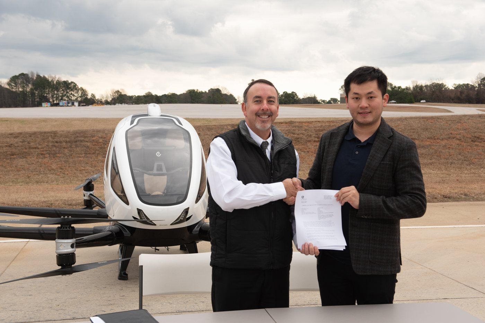
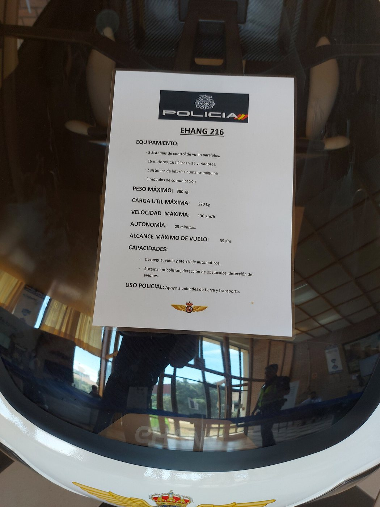
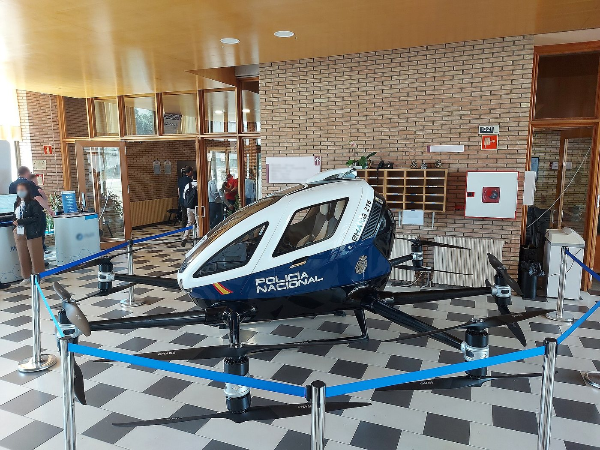
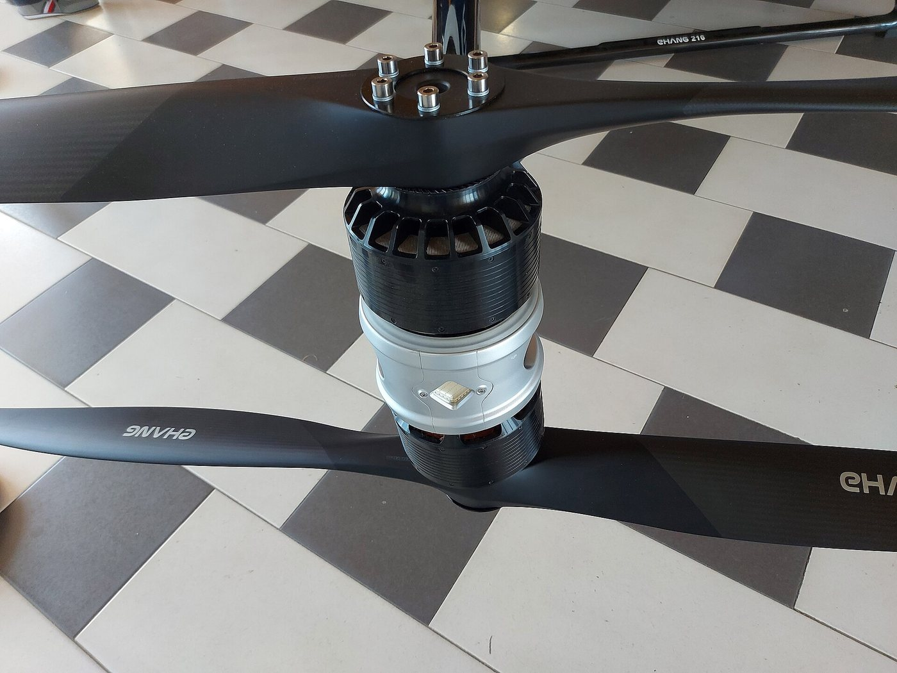
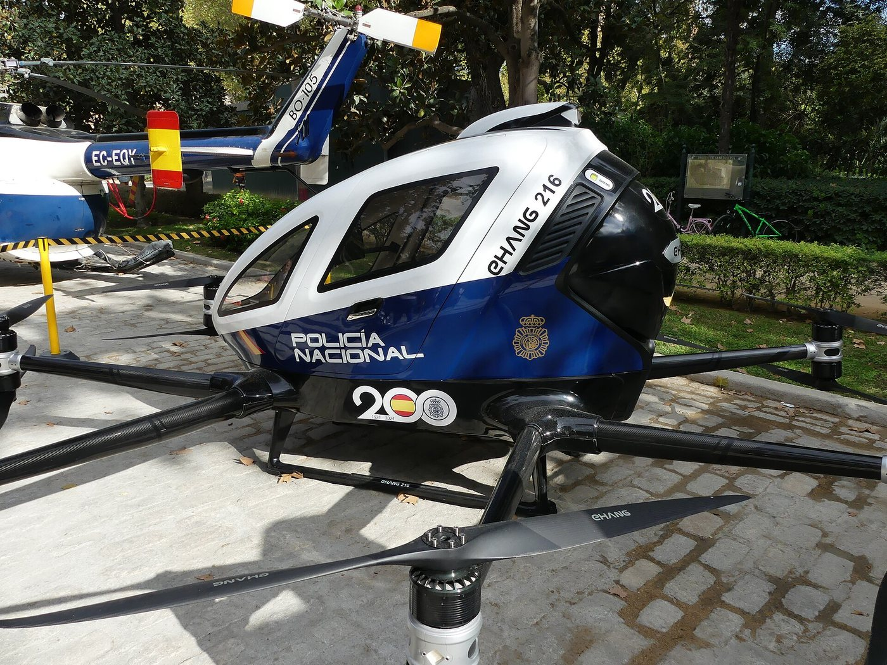
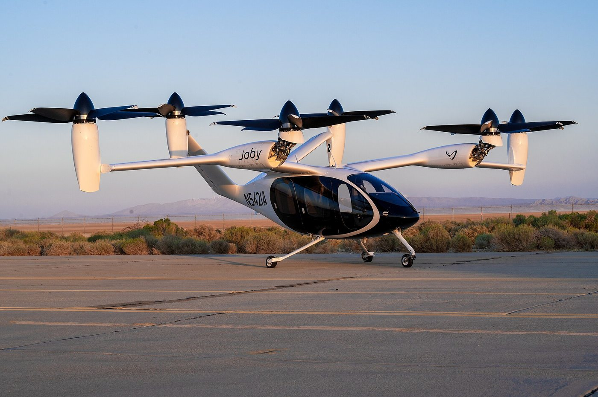
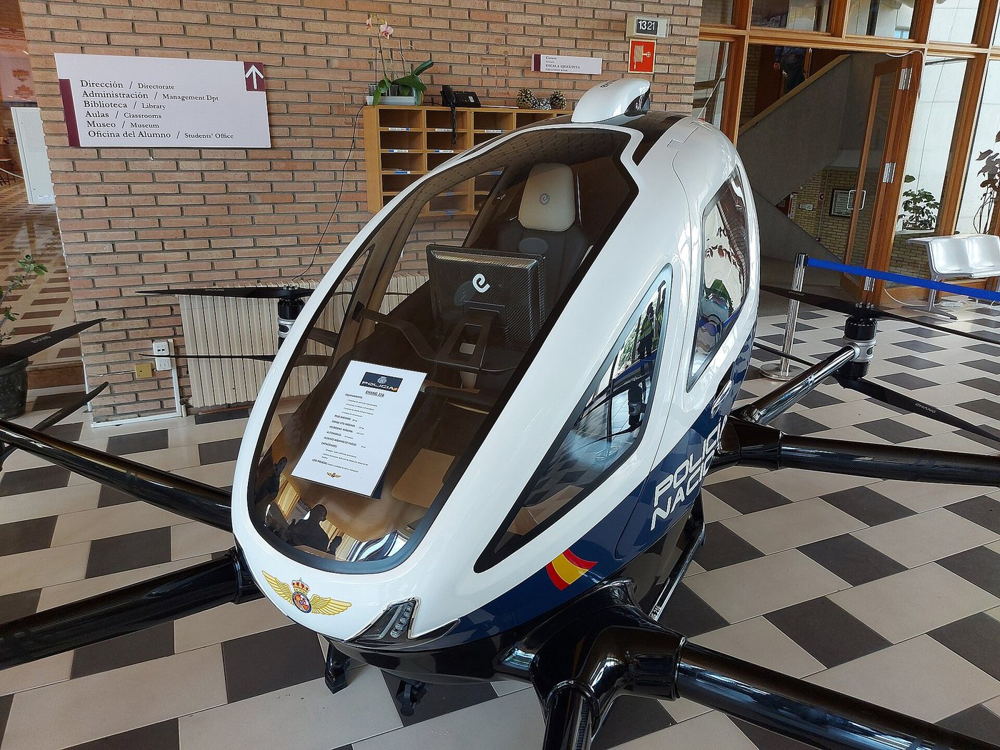

SECTION 00执行摘要Executive Summary
六条核心判断Six core judgements
- 产品定性：EH216-S 是一款取得适航四证（型号合格证 TC、标准适航证 AC、生产许可证 PC、运营合格证 OC）的双座、纯电、多旋翼、预设航线无人驾驶载人航空器；它不是通用 eVTOL 的完成形态，而是"限定场景 + 限定运行包线"的低空载人平台[1][2][6]。Product definition: EH216-S is a two-seat, battery-electric multirotor aircraft flying pre-programmed routes, holding four CAAC approvals (TC, AC, PC, OC) [1][2][6]. It is a constrained low-altitude platform, not a general-purpose mature eVTOL.
- 技术可行性：八轴十六旋翼分布式电推进、关键飞行部件全备份、地面指挥调度系统构成的技术闭环已通过局方审定，证明构型与冗余设计在限定包线内工程可实现；但 30 km 设计航程、25 min 续航与 200 m 级运行高度，决定了它尚不满足规模化城市通勤所需的载荷—航程门槛[7][22]。Technical feasibility: A 16-rotor distributed electric propulsion layout with full redundancy of critical flight components passed regulatory review, proving engineering feasibility within a limited envelope. A 30 km design range and 25 min endurance remain below the threshold for scaled urban commuting [7][22].
- 监管是比气动更硬的约束：无人驾驶载人在全球范围内缺少可复用的成熟审定范式。CAAC 以"专用条件"完成个案突破，EASA 以 SC-VTOL-01 建立普适框架，FAA 以 AAM 战略与 powered-lift 规则推进；三套体系的互认与协调，比旋翼效率更决定商业化速度[9][10][11][22]。Regulation, not aerodynamics, is the binding constraint: pilotless passenger flight lacks a reusable global certification template. CAAC used bespoke special conditions, EASA issued SC-VTOL-01, and FAA advances powered-lift rules under its AAM strategy [9][10][11][22].
- 应用场景：近期最现实的是低空文旅与城市观光，其后是枢纽接驳与应急/警务等专业场景；城市通勤、城际出行、即时物流在现有包线、法规与成本结构下不成立。这与课件第五章"专业化与大众化双线并行、低空文旅先行"的判断一致[22][5]。Scenarios: low-altitude sightseeing is the only near-term viable commercial scenario, followed by hub connection and public-safety missions. Urban commuting, intercity travel and parcel logistics are not supported [22][5].
- 市场可行性：239 万元/架的官方指导价、示范项目主导的 B/G 端采购、明确但狭窄的收入模型，使其定位为低产量、高话题性、以示范运营牵引产业链成熟的早期业务；本文的敏感性测算为教学估算，不构成收入预测[3][4]。Market feasibility: a RMB 2.39 M list price and demonstration-led B/G procurement define an early, low-volume business. The sensitivity analysis below is a teaching estimate, not a forecast [3][4].
- 方法论启示：越是被"全球首张""四证齐全"等标题冲击，越需要把演示 / 取证 / 商业运营 / 规模化盈利拆成四层分别举证，并为每一个数字标注来源等级[23]。Methodological lesson: headline claims such as "world's first" require separating demonstration, certification, commercial operation and scaled profitability, with a source grade attached to every number [23].
数据来源：亿航智能官方新闻稿[2][3][4]、第三方参数数据库与百科交叉核验[6][7]。不同来源对最大起飞重量（620 / 650 kg）与机身尺寸存在口径差异，见 03 节表 3。Sources: EHang press releases [2][3][4], cross-checked against third-party databases [6][7]. Published figures for MTOW and dimensions differ between sources; see Table 3.
SECTION 01研究设计与证据边界Research Design and Evidence Boundary
本文采用系统综述式案例评估（systematic-review-informed case assessment），而非宣称完成了一项多评审员、全数据库的正式系统综述。研究过程为：问题界定 → 检索协议 → 来源分级 → 证据矩阵 → 工程评估 → 场景与市场敏感性分析。研究对象限定为 EH216-S 无人驾驶载人航空器系统及其衍生平台，时间范围为 2016 年概念发布至 2026 年 11 月 26 日。
This article applies a systematic-review-informed case assessment: question framing, search protocol, source grading, evidence matrix, engineering evaluation, and scenario/market sensitivity analysis. Scope: the EH216-S system and derivatives, 2016 to 26 November 2026.
课件第四章以"如何快速深入了解一个全新技术领域"为例，给出从行业媒体、企业与产品调研、综述性论文与研究报告，到学术论文、专利、标准法规、生产与运营的递进路径[21]。本文将这一路径落实为可审计的检索协议，并对每一类结论标注证据等级；所有教学估算单独标记为 E4，不与官方数据混用。
Following the staged research path taught in Chapter 4 [21], the protocol below is made auditable. Every conclusion carries an evidence grade; teaching estimates are marked E4 and never mixed with official data.
| 类别Category | 检索对象Sources queried | 用途Purpose | 等级Grade |
|---|---|---|---|
| 局方与法规Regulator | 中国民航局专用条件、EASA SC-VTOL-01、FAA AAM 文件、国务院/中央军委条例CAAC special conditions, EASA SC-VTOL-01, FAA AAM documents, national regulations | 审定路径、适航要求、运行规则Certification basis and operating rules | E1E1 |
| 企业一手披露Manufacturer | 亿航智能官网新闻稿、投资者关系公告、产品页EHang press releases, investor releases, product pages | 取证日期、指导价、产品定位Approval dates, list price, positioning | E1*E1* |
| 权威媒体与百科Media / encyclopaedia | 人民网、行业媒体、百科词条、参数数据库People's Daily, trade press, encyclopaedias, spec databases | 交叉核验参数、运营进展、公开数据冲突识别Cross-checking specifications and operating status | E2E2 |
| 学术与标准Academic / standards | 综述论文、飞行汽车发展报告、ISO / SAE / RTCA 标准Review papers, industry roadmaps, ISO/SAE/RTCA standards | 技术瓶颈、产业链结构、安全工程框架Technical bottlenecks, supply chain, safety framework | E3E3 |
| 本文计算与图示This article | 敏感性测算、能力层级划分、构型与流程示意Sensitivity estimates, capability levels, original diagrams | 教学推演，明确标注为估算Teaching estimates, explicitly labelled | E4E4 |
* 企业披露属于一手来源，但含市场宣传属性；凡涉及"全球首张""超 5 万架次安全试飞"等表述，本文均降级为 E2 并寻找局方或第三方交叉印证。排除规则：无出处的社交媒体帖子、影视特效画面、无法追溯的宣传渲染图、未经核验的参数聚合页。* Manufacturer disclosures are primary but promotional; superlatives are downgraded to E2 pending corroboration. Excluded: unsourced social posts, CGI/renders, unverifiable aggregator specs.
型号合格证数据单（TCDS）、专用条件全文、飞行手册限制章节与运营规范属于非公开或受限文件。本文所能引用的性能参数主要来自企业披露与第三方汇编，因此所有性能数字均应视为"公开口径"而非"审定值"。这一限制在 05 节物理边界分析与作业 02 安全分析中同样适用。
The approved type-certificate data sheet, full special conditions and flight-manual limitations are not publicly accessible. All performance figures here are published claims, not certified values; the same limitation applies to the companion safety analysis.
SECTION 02发展路径与取证时间轴Development Path and Certification Timeline
EH216-S 的发展可以分为三段：概念与验证期（2016—2020）、审定与取证期（2020—2025）、示范运营期（2025 起）。与许多停留在原型阶段的 eVTOL 项目不同，它完成了从设计批准到生产批准再到运行批准的完整闭环，这正是本案例最具研究价值的部分[2][6]。
Three phases: concept and validation (2016–2020), type certification (2020–2025), and demonstration operations (from 2025). Unlike many eVTOL prototypes, it closed the full loop from design approval to production and operating approval [2][6].
图 1 发展路径时间轴。节点依据企业公告与百科交叉核验整理[2][3][6]；时间轴表示产品与审定状态变化，不代表量产成熟度或盈利水平。Figure 1 · Development timeline. It maps product and approval status, not production maturity or profitability [2][3][6].


| 日期Date | 事件Event | 含义Meaning | 证据状态Evidence |
|---|---|---|---|
| 2023-10-13 | 型号合格证 TCType Certificate | 型号设计符合审定基础，是投产、注册与投入使用的前提Design complies with the certification basis | E1 · 局方 |
| 2023-12-21 | 标准适航证 ACStandard Airworthiness Certificate | 单机具备适航状态；同月完成首批交付与商业飞行演示Individual aircraft airworthiness; first deliveries | E1 · 局方 |
| 2024-04-07 | 生产许可证 PCProduction Certificate | 授权按批准设计批量生产，要求全流程质量控制体系Series production under an approved quality system | E1 · 局方 |
| 2025-03-28 | 运营合格证 OCOperating Certificate | 审核运营主体持续安全运行能力，商业载人服务具备准入条件Operator approved for commercial passenger service | E1 / E2 |
| 2024-02-01 | 公布指导价 239 万元RMB 2.39 M list price | 2024-04-01 生效，为需求筛选与商业模式锚点Effective 1 Apr 2024; anchors the business case | E1* · 企业 |
| 2024—2026 | 海外试飞与区域示范Overseas demo flights | 多地完成首飞或示范点布局，尚非正式商业运营Demonstrations, not certified commercial service | E2 · 待核验 |
需要特别区分三个常被混用的概念：取证（设计/生产/单机获得批准）、商业运营准入（运营主体获得批准）、规模化盈利（单位经济模型成立）。EH216-S 已完成前两者，第三者在公开信息中尚无充分证据。课件第五章同样指出，当前阶段的核心任务"不是全面放量，而是通过示范运营推动产业链协同成熟"[22]。
Three concepts must be separated: certification of design/production/aircraft, approval of the operator, and profitable scale. EH216-S has achieved the first two; the third lacks public evidence [22].
SECTION 03产品定义与型号谱系Product Definition and Model Family
按课件第五章采用的定义，飞行汽车是"面向空地一体交通的电动垂直起降飞行器，包含纯飞式、分体式和两栖式三种产品形态"[22]。EH216-S 属于其中的纯飞式：不具备地面行驶能力，因此在道路车辆法规与航空法规的衔接上，反而比两栖式构型更少冲突，这是它能够较早完成取证的结构性原因之一。
Under the definition used in Chapter 5, flying vehicles include pure-flight, modular and amphibious forms [22]. EH216-S is a pure-flight aircraft: with no road mode, it avoids much of the land/air regulatory conflict that slows amphibious designs.


| 参数Parameter | 公开数值Published value | 口径说明Note | 等级Grade |
|---|---|---|---|
| 构型Configuration | 8 轴 / 16 旋翼 | 纯电多旋翼、共轴双桨、无倾转机构、无固定翼Pure multirotor, coaxial pairs, no tilt mechanism or wing | E2 |
| 载客Occupants | 2 人（无驾驶员） | 预设航线自主飞行，地面指挥调度中心监控Pre-programmed route, monitored from a ground control centre | E1* / E2 |
| 最大起飞重量MTOW | 620 / 650 kg | 来源冲突：第三方参数库为 620 kg，百科词条为 650 kg；本文采用 620 kg 并标注不确定Conflict: 620 kg vs 650 kg across sources; 620 kg used here with an uncertainty flag | E2 |
| 设计航程 / 续航Range / endurance | 30 km / 25 min | 设计值，不是获批航线长度；受温度、风速、载荷与余量影响Design values, not approved route length; affected by temperature, wind, payload and reserves | E2 |
| 速度Speed | 130 km/h（最大设计） | 巡航约 90 km/h；另有 105 km/h 不可超越速度口径~90 km/h cruise; VNE 105 km/h also reported | E2 |
| 机身尺寸Dimensions | 6.05 × 5.73 × 1.93 m | 长 × 宽 × 高；部分来源仅给 5.73 m 长，疑为宽度口径混用L × W × H; some sources quote 5.73 m as length, likely a width/length mix-up | E2 |
| 运行环境Environment | 5—40 ℃ | 公开参数库列出的环境温度限制，需以飞行手册为准Published ambient temperature limit; flight manual governs | E2 |
| 指导价List price | RMB 2,390,000 | 中国市场官方指导价，2024-04-01 生效，不含运营与基础设施成本China list price effective 1 Apr 2024, excluding operations and infrastructure | E1* |
公开资料中 620 kg 与 650 kg 两种最大起飞重量并存，机身长度与宽度也存在混用。本文不挑选"看起来更权威"的数字，而是保留冲突、标注等级、并在所有推导中采用保守值。这与参考案例对"演示参数 / 产品参数 / 安全参数"三层划分的处理一致[23]。
Where sources disagree (620 vs 650 kg MTOW), the conflict is retained and graded, and conservative values are used in all derivations — consistent with the three-layer parameter split in the reference case [23].
3.1 型号谱系与平台化3.1 Model family and platform strategy
同一机体平台衍生出面向不同任务的型号，是降低审定与制造边际成本的常见做法。公开资料可辨识的谱系包括载人型 EH216-S、消防型 EH216-F、物流型 EH216-L，以及航程更长的复合翼构型 VT 系列。需要注意，衍生型号并不自动继承 EH216-S 的 TC，通常需补充审定或单独取证[8]。
Derivatives on a common airframe reduce certification and manufacturing cost. Publicly identifiable variants include the passenger EH216-S, firefighting EH216-F, logistics EH216-L, and longer-range compound-wing VT series. Derivatives do not automatically inherit the EH216-S TC [8].
载人旗舰型Passenger flagship
双座、预设航线无人驾驶，唯一完成四证闭环的型号，定位低空观光与短途接驳。Two-seat pilotless flagship; the only variant with all four approvals.
证据：E1 + E2Evidence: E1 + E2
专业任务衍生型Mission derivatives
面向高层消防与短途物资运输，去掉载客约束后可在更宽松的风险边界内验证平台可靠性。Firefighting and cargo variants validate platform reliability under different risk boundaries.
证据：E2 · 细节待核验Evidence: E2 · details unverified
长航程复合翼Long-range compound wing
用升力巡航复合构型弥补纯多旋翼航程短板，指向城际与跨水域场景，审定状态与 EH216-S 不同。Lift-plus-cruise layout to address range limits; separate certification status.
证据：E2 · 非本文重点Evidence: E2 · outside main scope
SECTION 04系统架构与关键技术System Architecture and Key Technologies
EH216-S 的技术选择可以概括为一句话：用构型与冗余的复杂度，换取运行与操纵的简化。纯多旋翼不追求气动效率与航程，而是把全部设计余量投入到"无驾驶员条件下仍能安全飞行与降落"这一件事上。
One sentence summarises the design: complexity of configuration and redundancy is traded for simplicity of operation. The pure multirotor sacrifices aerodynamic efficiency and range to guarantee safe flight and landing with no pilot on board.
4.1 分布式电推进与"全备份"设计4.1 Distributed electric propulsion and full redundancy
16 个独立电机—旋翼单元由多组电池分区供电，飞控系统、传感器、动力与通信链路均采用备份设计。企业首席运营官在人民网采访中将这一思路描述为"把 IT 领域的全备份理念融入无人驾驶载人航空器"：一旦某个部件故障，备份部件立即接管[5]。从工程角度看，这一构型的关键不在于"有多少个旋翼"，而在于故障检测—隔离—推力重构闭环能否在秒级完成，且不引入共因失效。
Sixteen independent motor-rotor units are fed by partitioned battery groups, with backup flight computers, sensors, power and communication links [5]. The engineering question is not the rotor count but whether fault detection, isolation and thrust reallocation close within seconds without common-cause failure.
图 3 五层系统架构。前三层属于机载系统，第四层是无人驾驶构型特有的"机—地"耦合层，第五层为外部约束。架构划分依据课件第四章整车架构描述与第五章技术体系[21][22]，并结合公开运行方式整理（E4）。Figure 3 · Five-layer architecture. Layers 1–3 are on board, layer 4 is the ground-coupling layer unique to pilotless operations, layer 5 lists external constraints [21][22]. Original synthesis (E4).
4.2 无人驾驶：把"驾驶"从机上移到地面4.2 Pilotless operation: moving the pilot to the ground
EH216-S 不设机载驾驶员，按预先设置的航线自主飞行，通过高速网络与地面指挥调度系统实时交互，由地面侧规划与管理飞行路径、飞行时间[5][7]。这一设计带来三点工程后果：其一，消除了驾驶员人为失误这一传统航空事故主因，但把风险转移到航线规划、链路完整性与地面操作员；其二，运行安全从"单机"扩展为"机—地—网"体系问题；其三，对信息安全与电磁环境提出了远高于普通消费级无人机的要求。这三点将在姊妹篇安全分析中展开。
With no on-board pilot, the aircraft flies pre-programmed routes while exchanging data with a ground control centre [5][7]. This removes pilot error but transfers risk to route planning, link integrity and ground operators, turning safety into a system-of-systems problem — developed further in the companion paper.
4.3 能源、补能与结构材料4.3 Energy, charging and materials
纯电动力、约 2 小时充电（另有 1 小时快充口径）、25 min 续航，构成典型的"短航时 + 高频次周转"运行特征[5][7]。课件第五章判断动力路线将"纯电先行、混动主导、氢能远期、多元并行"[22]：EH216-S 恰处于"纯电先行"的示范起步期，其航程天花板本质上是电池能量密度与 reserve 要求的共同结果，而非飞控或结构问题。机身大量采用复合材料以控制空重，是载荷—航程权衡中的关键变量[22]。
Battery-electric power, ~2 h charging (1 h fast-charge also reported) and 25 min endurance define short, high-turnover operations [5][7]. Chapter 5 projects a "battery first, hybrid dominant, hydrogen long-term" pathway [22]; EH216-S sits at the first stage, with range limited by battery specific energy and reserve requirements.
| 技术域Domain | 关键技术Key technology | 本案例状态Status in this case | 判断Assessment |
|---|---|---|---|
| 平台Platform | 构型总体、轻量结构、增稳容错控制Configuration, lightweight structures, fault-tolerant control | 通过 TC 审定，限定包线内成立Type-certificated within a limited envelope | 工程可实现Feasible |
| 动力Propulsion | 分布式电推进、电池冗余与热管理DEP, battery redundancy, thermal management | 可支撑 25 min / 30 km，无法支撑城际Supports 25 min / 30 km, not intercity | 部分受限Constrained |
| 运行Operations | 预设航线、地面调度、多机协同Pre-loaded routes, ground dispatch, fleet coordination | 示范点已运行，高密度运行未验证Demonstrated at sites; high-density ops unverified | 待验证To be verified |
| 支撑Enabling | 起降场、补能、低空空管、法规标准Vertiports, charging, low-altitude ATM, regulation | 复用起步、分级配置，体系未成型Reuse-first, standards still emerging | 主要瓶颈Main bottleneck |
SECTION 05性能边界与物理约束Performance Envelope and Physical Constraints
课件第五章给出面向规模化实用的教学门槛：载荷 ≥ 100 kg、航程 ≥ 100 km，并把"载荷小、航程短"列为飞行汽车三大技术瓶颈之首[22]。EH216-S 的公开设计航程为 30 km，载荷能力（按 2 名乘员估算约 160—220 kg）在量级上满足载人需求，但航程仅为门槛的约 30%。这不是设计缺陷，而是产品定位的主动选择：它服务的是"点内观光"而非"点到点运输"。
Chapter 5 sets an indicative threshold of ≥100 kg payload and ≥100 km range for practical scale [22]. At 30 km design range, EH216-S reaches about 30% of that range threshold — a deliberate positioning choice for sightseeing within a site rather than point-to-point transport.
5.1 一个可审计的量级估算5.1 An auditable order-of-magnitude estimate
以巡航速度 v ≈ 90 km/h、续航 t ≈ 25 min 计算，理论航程 v·t ≈ 37.5 km，与公开的 30 km 设计航程同量级，差额可解释为起降悬停、爬升、航路余度与法规 reserve。若按 30 km 航程、25 min 续航反推，平均任务功率与电池可用能量必须满足 Eusable ≥ P·t / η；在电池能量密度与 620 kg 级最大起飞重量约束下，延长航程的唯一现实路径是提高电池比能量或改变构型气动效率，而非增加电池质量。这与课件对"载荷航程瓶颈"的判断一致[22]。
At v ≈ 90 km/h and t ≈ 25 min, v·t ≈ 37.5 km — the same order as the 30 km design range, with the difference explained by hover, climb, routing margins and reserves. Under a 620 kg-class MTOW, extending range requires higher battery specific energy or better cruise aerodynamics, not simply more battery mass [22].
L1 定点起降与悬停（已演示）→ L2 预设航线点内观光飞行（已取证、示范运营）→ L3 多站点、高频次、有限气象条件下的商业运行（部分试点，未验证经济性）→ L4 城市群通勤与规模化运输（现有包线下不成立）。公开证据主要覆盖 L1—L2；L3 需要运行数据支持；L4 需要构型与能源体系变更。
L1 hover and point take-off (demonstrated); L2 pre-programmed on-site sightseeing (certificated, demonstration ops); L3 multi-site high-frequency commercial service (pilots, economics unverified); L4 city-cluster commuting (not supported by the current envelope). Public evidence covers L1–L2.
| 层级Level | 能力描述Capability | 证据状态Evidence status | 主要约束Binding constraint |
|---|---|---|---|
| L1 | 垂直起降、悬停、定点降落VTOL, hover, point landing | 公开演示 / 审定 | 无— |
| L2 | 预设航线、点内观光、双座载人Pre-programmed on-site sightseeing | TC / AC / PC / OC | 气象、空域、场地Weather, airspace, site |
| L3 | 多站点、高频次、可复制商业运行Multi-site repeatable commercial service | 试点中 / 未验证 | 调度、补能周转、单位经济Dispatch, turnaround, unit economics |
| L4 | 城市群通勤、规模化运输City-cluster commuting at scale | 现有包线下不成立 | 航程、能量密度、空域体系Range, energy density, airspace system |
SECTION 06适航审定与监管框架Certification and Regulatory Framework
这是本案例最值得写入课程作业的部分。课件第五章系统梳理了 TC / PC / OC 三证的分工：TC 确认"设计是安全、可行且适用于航空运营"，是投产、注册和投入使用的前提；PC 授权制造商批量生产合格产品，要求全流程制造能力与质量控制体系；OC 审核运营主体是否具备持续安全运行能力，对飞行人员、维护、运行程序与运行控制进行全方位审核[22]。EH216-S 的取证序列正是这一框架的真实映射。
Chapter 5 sets out the division of TC (design approval), PC (production approval) and OC (operator approval) [22]. The EH216-S approval sequence is a real-world mapping of this framework, with the Standard Airworthiness Certificate (AC) covering individual aircraft.
6.1 三套监管体系的横向比较6.1 Comparison of three regulatory systems
| 体系Authority | 核心文件Key document | 特点Characteristics | 对 EH216-S 的意义Implication |
|---|---|---|---|
| 中国民航局 CAACCAAC, China | 《EH216-S 型无人驾驶航空器系统型号合格审定专用条件》[9]；《无人驾驶航空器飞行管理暂行条例》[12]Bespoke special conditions for EH216-S [9]; interim UAV flight regulation [12] | "一事一议"个案突破；批准商业运营试点；为载人类无人驾驶运营标准提供样本Case-by-case breakthrough; pilot commercial operations approved | 已取得完整准入，但标准体系仍需从个案走向通用Full domestic approval obtained; generic standards still emerging |
| 欧洲航空安全局 EASAEASA, Europe | SC-VTOL-01《小型垂直起降飞机专用条件》[10]SC-VTOL-01 Special Condition for small VTOL [10] | 全球首个相对完整的普适性 eVTOL 适航技术框架，对飞行性能、结构与飞控提出明确要求First relatively complete generic eVTOL certification framework | 构型与运行模式不同，需按专用条件逐条符合性验证Different configuration and operating model require separate compliance |
| 美国联邦航空局 FAAFAA, USA | AAM 实施计划、《先进空中交通国家战略》、powered-lift 运行与驾驶员规则[11]AAM Implementation Plan, AAM National Strategy, powered-lift rules [11] | 以运行验证、监管工具与制度经验积累见长；体系面向有人驾驶为主Strong on operational validation and regulatory tooling; largely pilot-oriented | 无人驾驶载人类别的规则适配仍是开放问题Rules for pilotless passenger operations remain an open question |
课件第五章给出一组极具解释力的对照：航空监管理念把单机事故视为重大公共风险，要求事故概率低至 10⁻⁹ 量级，采取事前强约束、全过程审定；汽车监管理念把个体事故视为可统计、可容错，采取市场准入 + 事后监管[22]。飞行汽车恰好卡在两者之间——它希望获得汽车级的成本与产量，却必须满足航空级的安全。这一矛盾决定了"四证齐全"只是起点，而非商业化终点。
Chapter 5 contrasts aviation regulation (single accident as major public risk; ~10⁻⁹ failure probability; ex-ante full-process certification) with automotive regulation (statistically tolerable individual accidents; market entry plus ex-post oversight) [22]. Flying vehicles demand automotive cost at aviation safety — four approvals are a starting point, not the finish line.
SECTION 07应用场景与落地路径Operational Scenarios and Deployment Path
课件第五章把应用场景概括为专业化与大众化双线并行：专业化从刚需（紧急医疗、消防救援、特殊物流）走向增值型行业应用；大众化沿"低空文旅先行 → 枢纽接驳升级 → 区域交通突破 → 城市交通成网"四阶段演进[22]。EH216-S 当前明确落在第一阶段：企业公告与人民网报道均指向低空游览、城市观光、飞行体验，并"根据运营情况和相关法规，逐步开拓城市通勤、空中物流、应急医疗"[3][5]。
Chapter 5 describes dual tracks: professional missions from essential needs to value-added uses, and mass-market deployment in four stages led by low-altitude tourism [22]. EH216-S currently sits in stage one: sightseeing and flight experience, with other scenarios explicitly deferred [3][5].
以观光体验切入，技术门槛与政策包容度较高，积累用户信任与运行数据。Low barrier, tolerant policy, accumulates operating data.
连接机场、高铁站等枢纽，实现分钟级立体接驳，成为城市交通补充。Links airports and rail hubs as a network supplement.
城市群间城际飞行，推动适航标准与空域管理体系完善。Intercity flights drive standards and airspace reform.
与地面公交、轨道协同，形成规模化空地一体出行体系。Integrated with ground transit at scale.
图 8 大众化应用四阶段演进路径，依据课件第五章第 12 页整理[22]（E3/E4）。EH216-S 处于第 1 阶段。Figure 8 · Four-stage mass-market deployment path, from Chapter 5, p.12 [22]. EH216-S is at stage 1.

值得强调一个容易被忽略的约束：起降场不是"一块空地"。课件第五章指出，城市可用土地受限、噪声与安全间距要求抬高选址门槛，建设成本高昂且收益不确定，监管标准尚未统一，构成土地—资金—监管交织的系统性约束[22]。因此"20 多个运营示范点"这类数量指标，必须与"是否具备常态化商业载客条件"分开看待。
A vertiport is not merely an empty pad: land availability, noise and safety separation, cost, uncertain returns and unharmonised standards form intertwined constraints [22]. Site counts must therefore be separated from readiness for routine commercial passenger service.
SECTION 08市场可行性分析Market Feasibility Analysis
课件第五章把飞行汽车定位为低空经济的主赛道，并给出融资对比：截至 2025 年 6 月，飞行汽车赛道约 100—120 亿美元、头部效应明显、预计 2025—2030 年迎来商用爆发；同时指出产业正"由研发验证迈向工程化阶段，规模化商用体系亟待完善"[22]。在这一宏观背景下，对单一型号做收入预测极易失真，因此本文只做教学敏感性分析，明确标注假设，不做预测。
Chapter 5 positions flying vehicles as the main track of the low-altitude economy, with roughly USD 10–12 bn of sector funding by June 2025, while noting that scaled commercial systems remain immature [22]. Rather than forecast revenue, the analysis below is an explicitly labelled teaching sensitivity exercise.
| 情景Scenario | 累计交付（架）Deliveries | 确认比例Conversion | 单价（万元）Unit price | 整机收入估算Est. revenue |
|---|---|---|---|---|
| 保守Conservative | 150 | 60% | 239 | ≈ 2.2 亿元 |
| 基准Base | 600 | 75% | 239 | ≈ 10.8 亿元 |
| 积极Optimistic | 1500 | 85% | 239 | ≈ 30.5 亿元 |
计算式：累计交付 × 确认比例 × 239 万元。单价取自 2024 年官方指导价[3][4]；交付量与确认比例为本文设定的教学假设，不代表订单、产能或实际交付。不含运营服务、维保、基础设施、补贴、海外市场与二手残值（E4）。人民网报道 2024 年交付 216 架[5]，可作为量级参照但未经审计。Formula: deliveries × conversion × RMB 2.39 M. Price from [3][4]; delivery and conversion figures are teaching assumptions, not orders or capacity (E4). Excludes services, infrastructure, subsidies and overseas markets.
8.1 商业模式：从卖产品到卖运行8.1 Business model: from selling aircraft to selling operations
课件第五章给出的两阶段演化是"产品服务耦合期 → 生态导向期"：早期主机厂以生产销售为主，依托政府示范项目验证产品；后期由专业运营商主导，形成"基础设施 + 运输装备 + 全链条服务"三位一体生态，收入模型从"销量 × 单价"转向"飞行时长/里程 × 单位费率"[22]。EH216-S 目前明显处于第一阶段：OC 由运营航司取得，但商业载客服务在报道时点仍处于"抓紧进行飞行训练、空域协调、数据搜集"的准备阶段[5]。
Chapter 5 describes a two-stage evolution from product-service coupling to an ecosystem model, with revenue shifting from units × price to flight hours / distance × rate [22]. EH216-S is in stage one: the OC had been issued, but commercial passenger service was still in preparation at the time of reporting [5].
SECTION 09竞品与技术路线比较Competitors and Technology Routes
把 EH216-S 与倾转旋翼、复合翼路线并置，能更清楚地看到它的定位：它不是"更差的 Joby"，而是不同目标函数下的最优解——用最短的审定路径与最简单的机械构型，换取最早的商业准入；代价是放弃航程与速度。课件第五章对动力路线"纯电先行、混动主导、氢能远期"的判断，也解释了为什么多旋翼构型适合示范起步期[22]。
Set against tilt-rotor and lift-plus-cruise designs, EH216-S is not an inferior Joby but an optimum under a different objective: shortest certification path and simplest mechanics in exchange for earliest market access, at the cost of range and speed [22].
| 产品Product | 构型 / 驾驶Config / pilot | 航程 / 速度（公开口径）Range / speed (published) | 审定状态Certification | 路径特征Route |
|---|---|---|---|---|
| 亿航 EH216-SEHang EH216-S | 纯多旋翼 / 无人驾驶Multirotor / pilotless | 30 km / 130 km/h30 km / 130 km/h | 四证齐全 | 最早准入，观光切入Earliest approval, tourism-led |
| Joby S4Joby S4 | 倾转旋翼 / 有人驾驶Tilt-rotor / piloted | 约 240 km / 320 km/h~240 km / 320 km/h | FAA 审定推进中 | 面向空中出租车主线Air-taxi mainstream |
| Archer MidnightArcher Midnight | 倾转旋翼 / 有人驾驶Tilt-rotor / piloted | 约 160 km 级~160 km class | FAA 审定推进中 | 枢纽接驳导向Hub-connection focus |
| Volocopter VoloCityVolocopter VoloCity | 多旋翼 / 有人驾驶Multirotor / piloted | 短途城市运行Short urban hops | EASA 审定推进中 | 与 EH216-S 构型最接近Closest in configuration |
| 复合翼长航程型号Lift-plus-cruise types | 复合翼 / 无人驾驶Compound wing / pilotless | 约 200 km 级~200 km class | 审定推进中 | 补足纯多旋翼航程短板Addresses the range gap |
竞品参数取自公开汇编与厂商披露的口径[8][15]，不同来源差异较大，仅用于路线比较（E2）。用 NASA UAM 成熟度量表的语言概括：EH216-S 是"监管准入单点耀眼、运行体系仍薄弱"的典型。Competitor figures from public compilations and manufacturer disclosures [8][15]; indicative only (E2). In NASA UAM maturity language: a bright spot in regulatory approval, still weak as an operating system.


SECTION 10工程化与规模化路线Engineering and Scaling Roadmap
综合前九节，本文把从"示范运营"到"可复制商业运行"的路径归纳为四个 Go/No-Go 门槛。每个门槛都给出可观测的通过条件，避免用"持续推进""逐步完善"这类不可证伪的表述。
Four Go/No-Go gates with observable pass criteria summarise the path from demonstration to repeatable commercial service.
运行包线扩展Envelope expansion
从封闭景区航线扩展到多站点、跨区域、更复杂气象；以公开飞行手册限制与运行规范为准。From closed site routes to multi-site, cross-zone and more demanding weather, bounded by approved limitations.
通过条件：获批 ODD/运行规范可查Pass: published approved limitations
能量与周转Energy & turnaround
补能时间、电池寿命与备件体系支撑高频次运营；单位架次的能耗与维护成本可核算。Charging time, battery life and spares support high-frequency operations with auditable per-sortie costs.
通过条件：公开单位经济数据Pass: published unit economics
体系化运行安全Systemic operational safety
多机调度、空域融合、链路完好率、地面操作员资质与应急程序形成闭环，并有可审计的运行数据。Fleet dispatch, airspace integration, link integrity, operator licensing and contingency procedures closed with auditable data.
通过条件：持续安全记录可核验Pass: verifiable safety record
法规与商业闭环Regulatory & business closure
从"个案专用条件"走向可复用标准；保险、责任划分、收费机制与跨区域互认同步建立。From bespoke conditions to reusable standards, with insurance, liability, pricing and mutual recognition.
通过条件：通用标准与费率落地Pass: generic standards and tariffs
课件第五章提出的产业跃升路径是"筑基强链与赋能生态"：在产业链侧锻长板、填空白、开新局，在生态侧以核心层的自主可控能力为基础，向外延伸补强政策、空域、数字与基础设施保障[22]。对 EH216-S 而言，"锻长板"已完成（整机构型与取证），"填空白"（飞控、航电、操作系统等航空级关键系统）与"开新局"（制造—运营—服务一体化）才是真正的长期竞争壁垒。
Chapter 5 prescribes strengthening long boards, filling gaps and opening new fronts [22]. For EH216-S, the airframe and approval long board is established; aviation-grade flight control, avionics and operating systems, plus an integrated manufacture–operation–service model, are the real long-term barriers.
SECTION 11课程延伸：调研方法复盘Course Extension: Reviewing the Research Method
课件第四章以飞行汽车为例讲授"如何快速深入了解一个全新技术领域"，第五章进一步给出产业分析、技术体系与标准法规的完整框架[21][22]。把本次调研过程复盘为可复用的练习，比记住几个参数更有价值。以下五项练习均可用同一研究对象独立完成，也可替换为其他型号或子系统。
Chapter 4 teaches how to enter an unfamiliar technical field; Chapter 5 supplies industry, technology and regulatory frameworks [21][22]. Five reusable exercises follow, each of which can be repeated on another product or subsystem.
练习 A 构建证据表Exercise A · Build an evidence table
为本文出现的每个关键数字（航程、续航、MTOW、价格、取证日期）建立一行记录：数值、来源、发布日期、等级、是否存在冲突、核验方式。目标是让任何读者都能独立复现检索结果。
Log every key number with value, source, date, grade, conflicts and verification method so any reader can reproduce the search.
练习 B 绘制系统边界图Exercise B · Draw the system boundary
重绘图 3，但把边界改为"机—地—网—管"四域，并标出每个接口的失效模式。思考：哪些接口在有人驾驶航空器中不存在？
Redraw Figure 3 with aircraft–ground–network–regulator boundaries, mark interface failure modes, and identify interfaces absent in piloted aviation.
练习 C 故障清单与能力层级Exercise C · Failure list and capability levels
列出 10 项可能导致任务中止或迫降的故障（电机、电调、电池、链路、导航、气象……），并标注每一项落在 L1—L4 哪一层级受影响。该清单将直接作为姊妹篇安全分析的输入。
List ten failures that could abort a sortie or force a landing, map each to capability levels L1–L4, and use the list as input to the companion safety analysis.
练习 D 场景矩阵与敏感性表Exercise D · Scenario matrix and sensitivity table
修改表 7 的交付量与确认比例假设，观察结论是否翻转；再为"运营服务收入"单独建立一张敏感性表，比较硬件销售与运行时长两种收入模型的稳定性。
Vary the assumptions in Table 7 to test whether conclusions flip, then build a separate sensitivity table for service revenue and compare model stability.
练习 E 监管差异对照Exercise E · Regulatory gap analysis
把 CAAC 专用条件、EASA SC-VTOL-01 与 FAA powered-lift 框架按"设计 / 生产 / 运行 / 人员 / 空域"五个维度对照，找出无人驾驶载人类别尚无对应条款的位置。
Compare CAAC special conditions, EASA SC-VTOL-01 and FAA powered-lift rules across design, production, operations, personnel and airspace; locate gaps for pilotless passenger operations.
小鹏汇天"陆地航母"分体式构型、峰飞复合翼货运型号、Joby S4 倾转旋翼、Volocopter VoloCity 多旋翼、以及"低空空管平台""飞控计算机""动力电池热管理"等子系统，均可用本文的同一套证据—架构—场景—市场框架分析。选定对象后，作业 02 的安全分析可沿用同一对象，形成完整课程作业链。
The same framework applies to modular flying vehicles, compound-wing cargo types, tilt-rotor aircraft, other multirotors, or subsystems such as low-altitude traffic management, flight-control computers and battery thermal management.
SECTION 12局限、未决问题与结论Limitations, Open Questions and Conclusion
12.1 本文的五项局限12.1 Five limitations
- 数据边界：TCDS、专用条件全文、飞行手册限制与运营规范未公开，性能参数均为公开口径而非审定值。Data boundary: approved data sheets, full special conditions and flight-manual limitations are not public; all figures are published claims.
- 来源冲突：MTOW、机身尺寸、续航与充电时间在不同来源间存在差异，本文保留冲突而非消解。Source conflicts: MTOW, dimensions, endurance and charging time differ across sources; conflicts are retained, not resolved.
- 运行数据缺失：公开的架次、可用率、单位成本、准点率与事件记录不足以评估 L3 层级的经济性。Missing operational data: sortie counts, availability, unit cost and incident records are insufficient for L3 economics.
- 企业披露偏差：取证与运营信息主要来自企业一方，宣传性表述已降级但无法完全消除。Disclosure bias: approval and operating information largely comes from the manufacturer; promotional bias is downgraded but not eliminated.
- 时效性：低空经济政策、空域规则与审定标准处于快速演进中，本文结论以 2026-11-26 为截止。Time sensitivity: policy, airspace rules and standards evolve rapidly; conclusions are cut off at 26 Nov 2026.
12.2 需要持续追踪的四类证据12.2 Four evidence streams to track
通用适航标准与专用条件的更新，以及跨区域互认进展。Updates to generic airworthiness standards and mutual recognition.
商业载客服务的实际开放范围、票价、架次与可用率。Actual scope, fares, sortie counts and availability of commercial service.
电池能量密度、快充周转与全寿命成本数据。Battery specific energy, fast-charge turnaround and life-cycle cost.
运行安全记录、事件报告与持续适航要求。Operational safety records, incident reports and continued airworthiness.
"它不是飞行汽车的终局，而是飞行汽车第一次以完整取证产品的形态，进入真实监管与真实运营的考场。""Not the endgame of the flying car, but the first time it entered the examination room of real regulation and real operations as a fully certificated product."
总结：在技术维度，EH216-S 证明了无人驾驶多旋翼载人构型在限定包线内可被审定、可被制造、可被运营批准；在场景维度，它精准地落在低空文旅这一狭窄但真实的第一阶段；在市场维度，它是以示范运营牵引产业链成熟的早期业务，尚不具备高频服务与大众市场规模化的证据。三个维度合起来，恰好对应课件第五章"产业应用、技术创新、支撑保障三大支柱协同演进"的判断——目前技术创新支柱最高，产业应用刚起步，支撑保障仍是短板[22]。
Conclusion: technically, EH216-S demonstrates that a pilotless multirotor passenger aircraft can be certificated, produced and operator-approved within a limited envelope. Operationally it sits precisely in stage-one low-altitude tourism. Commercially it is an early, demonstration-led business without evidence for high-frequency service or mass-market scale — matching Chapter 5's three-pillar framework, with technology strongest and enabling systems weakest [22].
SECTION 13参考文献References
文献按本文首次引用顺序编号。企业新闻稿与百科类来源已按 01 节规则标注等级；图片条目附作者与许可协议。Numbered in order of first citation. Manufacturer and encyclopaedia sources are graded per Section 01; image entries include author and licence.
- [1] 亿航智能（EHang, Nasdaq: EH）官方网站与产品资料EHang official website and product information. https://www.ehang.com/ · E1*
- [2] 亿航智能，《亿航智能获得中国民航局颁发的生产许可证，EH216-S 迈入规模化生产》EHang, "EHang Receives Production Certificate from CAAC for EH216-S". https://www.ehang.com/news/1059.html · E1*
- [3] 亿航智能，《EH216-S 在中国市场官方指导价 239 万元人民币》，2024-02-01EHang, "Suggested Retail Price of RMB 2.39 Million for EH216-S in China", 1 Feb 2024. https://www.ehang.com/news/1044.html · E1*
- [4] EHang Investor Relations, "EHang Announces Suggested Retail Price of RMB2.39 Million for EH216-S Passenger-Carrying UAV System in China", 1 Feb 2024. ir.ehang.com · E1*
- [5] 人民日报 / 人民网，《"空中的士"飞入现实（探访）》，2025-04-26People's Daily, "'Air Taxis' Enter Reality", 26 Apr 2025. finance.people.com.cn · E2
- [6] 百度百科，"EH216-S 无人驾驶载人航空器系统"词条（发展历程、认证节点与参数交叉核验）Baidu Baike, "EH216-S" entry (timeline, approvals, specifications). baike.baidu.com · E2
- [7] 低空经济资源网，亿航 EH216-S 参数配置页（构型、速度、航程、电池、环境限制）Low-altitude economy resource portal, EH216-S specification sheet. laernoc.com · E2
- [8] 飞行邦，《亿航智能 EH216-S：民航三证的无人驾驶载人 eVTOL》及产品矩阵页（竞品参数口径）FlyingState, EH216-S technical overview and EHang product matrix. flyingstate.com · E2
- [9] 中国民用航空局（CAAC），《亿航 EH216-S 型无人驾驶航空器系统型号合格审定专用条件》及适航审定相关公告CAAC, "Special Conditions for Type Certification of EHang EH216-S Unmanned Aircraft System". https://www.caac.gov.cn/ · E1
- [10] European Union Aviation Safety Agency (EASA), "Special Condition for Small-Category VTOL Aircraft / SC-VTOL-01", 2019. https://www.easa.europa.eu/ · E1
- [11] Federal Aviation Administration (FAA), "Advanced Air Mobility (AAM) Implementation Plan" and "AAM National Strategy 2026–2036"; powered-lift rulemaking. https://www.faa.gov/ · E1
- [12] 国务院、中央军委，《无人驾驶航空器飞行管理暂行条例》Interim Regulations on the Flight Management of Unmanned Aircraft · E1
- [13] 《飞行汽车发展报告 2.0：迈向空地一体交通新时代》（课件第五章核心参考，产业应用 / 技术创新 / 支撑保障三大方向）Flying Vehicle Development Report 2.0: Towards Integrated Air-Ground Transport (core reference of Chapter 5) · E3
- [14] 张扬军等，《飞行汽车的研究发展与关键技术》（综述性论文，发展阶段、瓶颈与关键技术）Zhang Yangjun et al., "Research Development and Key Technologies of Flying Cars" (review) · E3
- [15] "Flying Car Transportation System: Advances, Techniques, and Challenges", IEEE Xplore document 9345783. ieeexplore.ieee.org/abstract/document/9345783 · E3
- [16] Roland Berger, "Passenger Drones Ready for Take-off" (industry report, cited in Chapter 4). rolandberger.com · E3
- [17] 中国汽车工程学会 / 相关编写组，《飞行汽车白皮书 1.0》（定义、构成与整车架构，课件第四章引用）SAE-China et al., Flying Car White Paper 1.0 (definition and vehicle architecture) · E3
- [18] SAE International, ARP4754A "Guidelines for Development of Civil Aircraft and Systems"; ARP4761 "Guidelines and Methods for Conducting the Safety Assessment Process". · E1
- [19] RTCA, DO-178C "Software Considerations in Airborne Systems"; DO-254 "Design Assurance Guidance for Airborne Electronic Hardware"; DO-160G "Environmental Conditions and Test Procedures". · E1
- [20] ISO 26262 "Road vehicles — Functional safety"; ISO 21448 "Safety of the intended functionality (SOTIF)"; ISO/SAE 21434 "Road vehicles — Cybersecurity engineering". · E1
- [21] 张玉新，《第四章 飞行汽车的现状及展望》，飞行汽车技术基础，吉林大学自动驾驶安全联合实验室，2026Zhang Yuxin, Chapter 4: Status and Outlook of Flying Vehicles, Jilin University, 2026 · E3
- [22] 张玉新，《第五章 飞行汽车产业分析及支撑技术》，飞行汽车技术基础，吉林大学自动驾驶安全联合实验室，2026Zhang Yuxin, Chapter 5: Industry Analysis and Enabling Technologies, Jilin University, 2026 · E3
- [23] Yuxin Zhang, "The Flying Tesla Roadster: Technical, Operational, and Market Feasibility", Fundamentals of Flying Vehicle Technology, Case 01 (methodological reference). lab.autozyx.com · E3
- [24] 中国民航局关于载人类民用无人驾驶航空器运营合格证（OC）首批颁发的公开信息，2025-03CAAC public information on the first Operating Certificates for passenger-carrying UAVs, Mar 2025 · E1 / E2
- [25] ISO/IEC/IEEE 15288:2015, "Systems and software engineering — System life cycle processes". · E1
- [26] NASA / UAM 成熟度与运行概念相关公开材料（用于"单点耀眼、体系薄弱"的类比） · E3
- [27] 《低空经济促进法》《空域管理条例》等立法与标准演进讨论（课件第五章第 30—31 页整理）Discussion on low-altitude economy legislation and airspace regulation, Chapter 5, pp.30–31 · E3
- [28] Uber Elevate, "Fast-Forwarding to a Future of On-Demand Urban Air Transportation" (UAM concept reference) · E3
- [29] SAE AS9100 "Quality Management Systems — Aviation, Space and Defense"; MIL-STD-882E "System Safety" · E1
- [30] Artvill, "EHang 216-S au Salon du Bourget 2025", Wikimedia Commons, CC BY 4.0. commons.wikimedia.org
- [31] NCDOTcommunications, "NCTranspoSummit-2020.01.08-0087", Wikimedia Commons, CC BY 2.0. commons.wikimedia.org
- [32] David Perez, "EHang 216 5 especificaciones", Wikimedia Commons, CC0.
- [33] David Perez, "EHang 216 8 vista general", Wikimedia Commons, CC0.
- [34] David Perez, "EHang 216 2 motores", Wikimedia Commons, CC0.
- [35] David Perez, "EHang 216 1 frente", Wikimedia Commons, CC0.
- [36] CarlosVdeHabsburgo, "EHang 216 de la Policía Nacional", Wikimedia Commons, CC BY-SA 4.0.
- [37] CarlosVdeHabsburgo, "Ehang 216.jpg", Wikimedia Commons, CC BY-SA 4.0.
- [38] NonNerd, "Helipad in Jatayu Park", Wikimedia Commons, CC0.
- [39] Harlan Huntington / U.S. Air Force, "Joby Aviation S4 experimental eVTOL aircraft at Edwards AFB", Wikimedia Commons, Public domain.
- [40] NASA Langley Research Center / NASA Mark Knopp, "Electric Vertical Take-off and Landing Impact Event" (LRC-2025-OCIO P-01814 / P-01840), Wikimedia Commons, Public domain. （用于姊妹篇坠撞安全讨论）(used in the companion safety paper)